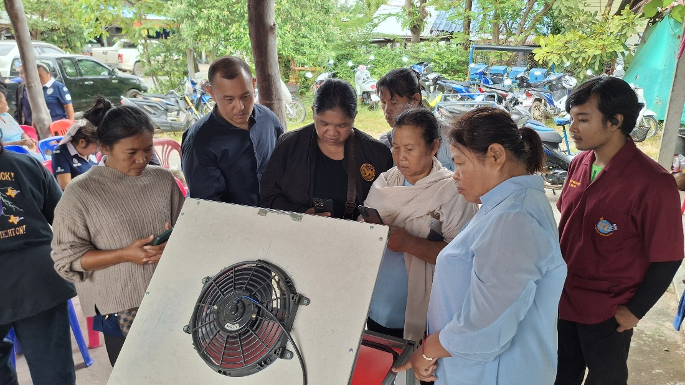
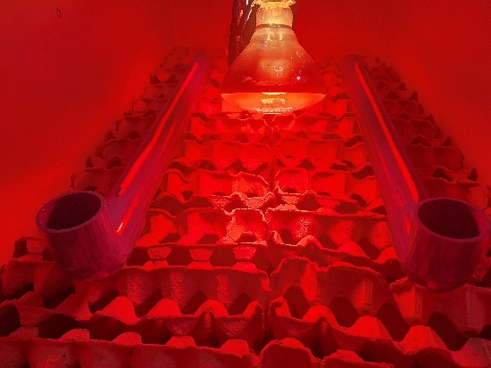
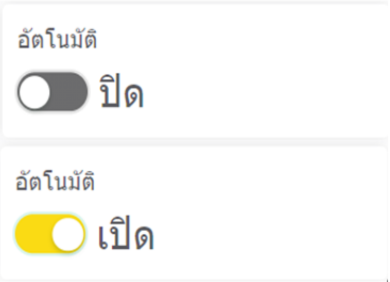

ประสิทธิภาพและการยอมรับจากชุมชน
ตารางเปรียบเทียบประสิทธิภาพระบบเลี้ยงจิ้งหรีด
| ประเด็นเปรียบเทียบ | ระบบของคณะผู้วิจัย (BRU) | ระบบของเกียรติสิน (2563) | ระบบของพีระยุทธ (2568) |
|---|---|---|---|
| วัตถุประสงค์หลัก | ควบคุมอุณหภูมิความชื้นปิดวงจร เพิ่มผลผลิตและลดแรงงาน | ควบคุมการให้อาหารและน้ำอัตโนมัติ ลดแรงงาน | ตรวจวัดและส่งข้อความแจ้งเตือนผ่าน Line |
| เทคโนโลยีที่ใช้ | ESP8266, DHT11, พัดลม, หลอดไฟอินฟราเรด, Blynk | RH Sensor, Rotary Feeder, NETPIE IoT | ESP32, DHT11, PM2.5 Sensor, Line Notify |
| การควบคุมสิ่งแวดล้อม | ควบคุมอุณหภูมิคงที่แบบ Real-time | ตรวจวัดได้อย่างเดียว ไม่มีพัดลม/ไฟตู้ | ไม่มีระบบควบคุมอุปกรณ์อัตโนมัติ |
| ผลลัพธ์ประสิทธิภาพ | อัตรารอดเพิ่มขึ้น ลดเวลาเลี้ยง อุณหภูมินิ่งกว่าปกติ | อัตรารอดของจิ้งหรีดขยับจาก 450 เป็น 530 ตัว | อัตรารอด 94.56% ประสิทธิภาพ 4.76/5.00 |
| ข้อดีเด่น | ควบคุมสภาวะนิ่งเสถียร ส่งผลผลผลิตตรงที่สุด | เด่นในระบบให้อาหาร/น้ำแบบท่อหมุน | เด่นในส่วนแจ้งเตือนฝุ่นละออง PM2.5 |
ติดตามและสั่งการระยะไกล ผ่านเว็บและสมาร์ทโฟน
ระบบใช้ Blynk Server ในการเชื่อมต่อข้อมูล โดยดึงอุณหภูมิส่วนหัวของตู้, ส่วนท้ายของตู้ และแสดงค่าเฉลี่ย โดยมีเมนูที่เกษตรกรสามารถคลิกเลือกระบบตู้เลี้ยงสำหรับ "ตัวอ่อน" (27-32°C) หรือ "ตัวเต็มวัย" (25-35°C) ได้ทันที


การถ่ายทอดเทคโนโลยีสู่ชาวบ้านในชุมชน

อบรมเชิงปฏิบัติการให้ความรู้การเลี้ยงด้วยระบบอัตโนมัติ
สอนการใช้งานแอปพลิเคชัน Blynk ให้กับเกษตรกรคณะทำงานได้ลงพื้นที่จริงเพื่อช่วยเหลือเกษตรกร ต.หนองใหญ่ อ.สตึก จ.บุรีรัมย์
ไม่ใช่เพียงการสร้างงานวิจัยบนหิ้ง คณะผู้วิจัยและพัฒนาได้ลงพื้นที่จัดฝึกอบรมเชิงปฏิบัติการให้กับเกษตรกรกลุ่มตัวอย่างจำนวน 50 คน รวมถึงนำรังเลี้ยงจิ้งหรีดอัจฉริยะไปติดตั้งใช้งานจริงที่ฟาร์มของคุณลุงสำรวย และกลุ่มผู้เลี้ยงจิ้งหรีดบ้านหนองกับ เพื่อให้สามารถเฝ้าติดตามผลผลิตและเพิ่มขีดความสามารถการทำฟาร์มในอนาคตได้อย่างยั่งยืน
เสียงสะท้อนความสำเร็จจากเกษตรกร
“ช่วงอากาศหนาวที่ผ่านมา จิ้งหรีดที่บ้านโตเร็วและแข็งแรงมาก เพราะตู้คอยเปิดไฟอุ่นให้ตลอด คุ้มค่าที่ได้เข้าร่วมโครงการจริงๆ”
คุณลุงสำรวย — เกษตรกรผู้ร่วมโครงการทดสอบระบบจริง“แต่ก่อนต้องคอยวิ่งไปดูอุณหภูมิ กลัวจิ้งหรีดร้อนตาย ตอนนี้ดูจากมือถือได้เลย สะดวกและลดเวลาไปได้เยอะมากค่ะ”
คุณป้าประนอม — สมาชิกกลุ่มผู้เลี้ยงจิ้งหรีดบ้านหนองกับ